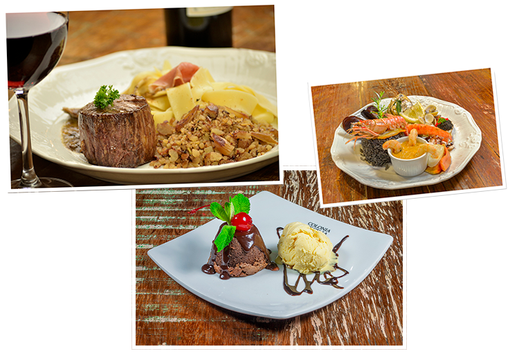

Desde 1991
A mesa italiana de Curitiba
Tradição e simpatia são ingredientes primordiais da nossa casa. Massas, risotos, carnes e frutos do mar, servidos com a história da família Artusi Agottani.
Batel
Rua Mal. José Bernardino Bormann, 600, Curitiba/PR (41) 3013-5379 Reservar pelo WhatsAppUma história de amor pela cozinha italiana
O Anarco nasceu em 1991, fundado por Ilsa Artusi Agottani. Da tradição da família à mesa dos curitibanos, cada prato carrega memória e receitas que atravessam gerações.
Hoje, a casa mantém viva a herança da Colônia Cecília, com o mesmo cuidado com ingredientes, temperos e o jeito generoso de receber.
“Venha experimentar as delícias da Anarco e fazer parte desta linda história de amor pela cozinha italiana.”
Escolha a sua casa
Duas unidades em Curitiba, com o mesmo cardápio e o mesmo atendimento de sempre.
Mercado Municipal
Av. Sete de Setembro, 1865, Box 16, Curitiba/PRTelefone: (41) 3336-0049
Reservar pelo WhatsAppBatel
Rua Mal. José Bernardino Bormann, 600, Curitiba/PRTelefone: (41) 3013-5379
Reservar pelo WhatsAppReserve a sua mesa
Almoço, jantar ou grupo — escolha a unidade e fale direto pelo WhatsApp oficial.